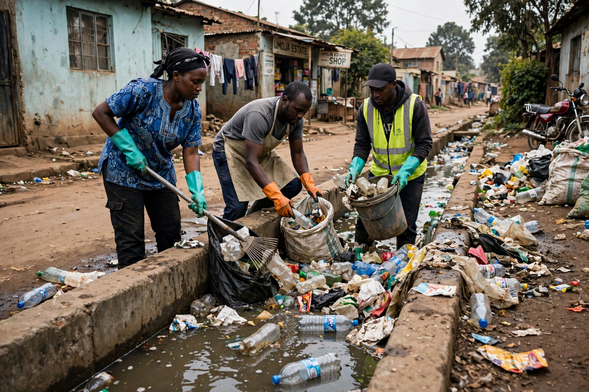
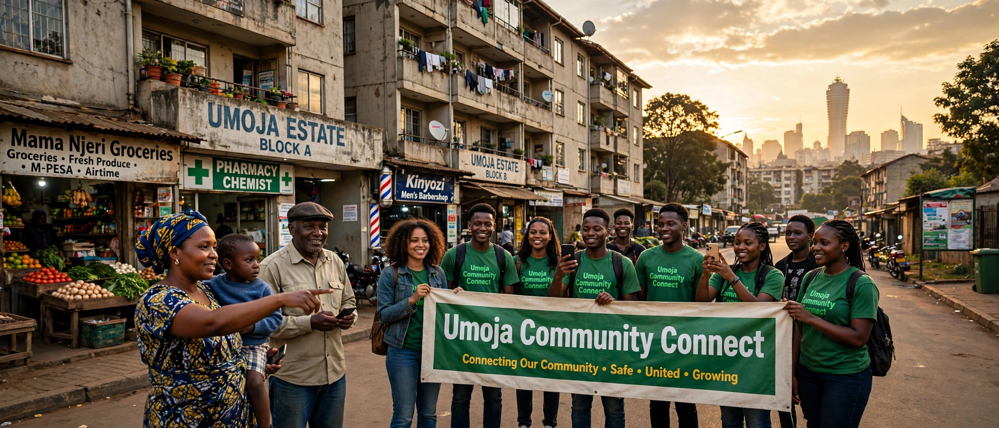
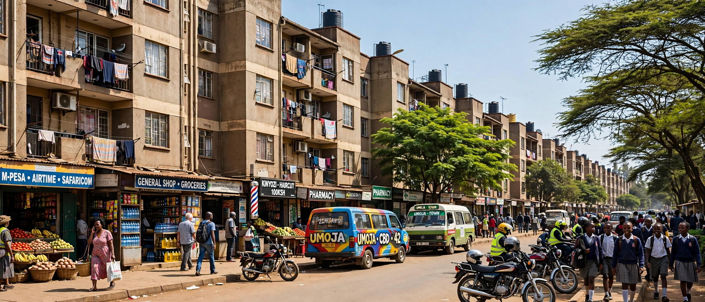

UMOJACONNECT
Bright Umoja
Report an Issue Now
Emergency Desk: +254 700 866 521
Emergency Desk: +254 700 866 521
Connecting residents of Umoja 1, Umoja 2, and Innercore with county response units, rapid problem resolution, estate tree planting campaigns, and verified youth economic programs.
Issues Resolved
Trees Planted
Youth Engaged
Response Rate
Report in 60 seconds with instant photo upload.
Common Neighborhood Reports:
Submit Report NowTogether with parents, school children, and youth volunteers, we are actively greening our estate courts and public spaces. Our community tree planting campaigns reclaim former illegal dumpsites, creating lush community gardens and shade along Moi Drive.


When we come together, real change happens. Every Saturday morning, our youth teams and neighborhood residents pick up rakes, brooms, and trash bags to clear roadside waste, desilt storm drains, and plant trees that protect our air and soil.
Consecutive Saturday cleanups held across Umoja
Plastic and organic waste safely sorted and evacuated
Real grassroots action solving everyday civic challenges across Umoja, Nairobi.

Residents photograph garbage, potholes, and broken pipes for direct county escalation.
Submit report →
Community-led tree planting drives and estate cleanups turning wasteland into green hubs.
Join green drive →
Outdoor barazas on waste management, water harvesting, and youth skills development.
View workshops →
Constructive dialogue between county leadership, court committees, and local elders.
Learn more →Witness how community reporting and tree planting are revitalizing Umoja Estate.
Greened
A site once buried under rotting rubbish was cleared by youth volunteers and transformed into a thriving tree nursery and green garden.
 Restored
Restored
With clean paved roads, planted shade trees, and organized waste bins, children can play safely and families enjoy healthy open spaces.

DrainageYouth sanitation teams deployed rakes and protective gear to remove plastic debris from 450 meters of open stormwater culverts.
In every court and market corridor across Umoja, women are the backbone of community vigilance. Through Bright Umoja, market vendors and mothers monitor water pressure, report broken streetlights, and coordinate waste collection for their blocks.

Equipped with smartphones to map and report environmental issues in real-time.
Glimpses of tree planting, cleanups, meetings, and vibrant life across Eastlands.

